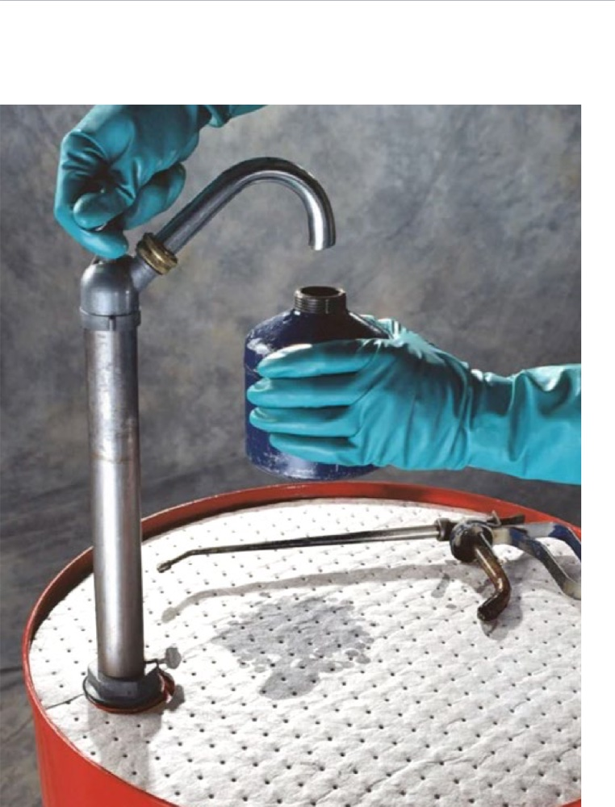

Chemia, którą produkujemy
Tworzymy skuteczne środki chemiczne dopasowane do potrzeb przemysłu, warsztatów i profesjonalistów. Pełna kontrola nad recepturami, surowcami i jakością.
Marka FRANZA — chemia, której możesz zaufać
Produkujemy chemię techniczną we własnym zakładzie w Polsce. Pełna kontrola nad procesem oznacza powtarzalną jakość, sprawdzone receptury i możliwość elastycznego reagowania na potrzeby klientów.
Nasze produkty trafiają do zakładów produkcyjnych, warsztatów motoryzacyjnych, firm transportowych i profesjonalnych usługodawców w całej Polsce.

SPILL MAT — sorbenty O&G Premium
Maty absorbcyjne FRANZA do neutralizacji wycieków olejów i paliw. Wyprodukowane metodą MELTBLOWN, zgrzewane ultradźwiękowo, 99% polipropylen.


Chłonność
Absorbują do 18× swojej wagi — od 25 do 125 litrów.
Antyelektrostatyczne
Brak zagrożenia samozapłonu — bezpieczne dla BHP i Ppoż.
Niepalne
W wysokich temperaturach najpierw filcują się, dopiero potem topią.
Pływają na wodzie
Hydrofobowe — chłoną tylko oleje i paliwa, wypierają wodę.
| Parametr | SPILL BARREL O&G Premium | SPILL ROLL O&G Premium | SPILL MAT O&G Premium |
|---|---|---|---|
| Forma | Na beczkę 210 L | Rolka | Arkusze |
| Wymiary | ⌀ 55 cm | 50 cm × 44 m | 40 cm × 50 cm |
| Ilość w opakowaniu | 25 mat | 1 rolka | 100 mat |
| Waga netto | 1,8 kg | 6,6 kg | 6,2 kg |
| Powierzchnia całk. | 6,2 m² | 22 m² | 20 m² |
| Absorbcja | do 25 L | 91–124 L | 81–112 L |
| Materiał | 99% Polipropylen | 99% Polipropylen | 99% Polipropylen |
| Gramatura | Meltblown 300 g/m² | Meltblown 300 g/m² | Meltblown 300 g/m² |
| Odpad po spopieleniu | < 0,02% | < 0,02% | < 0,02% |
Gdzie sprawdzają się SPILL MAT
Maty sorbentowe FRANZA znajdują zastosowanie wszędzie tam, gdzie istnieje ryzyko wycieku olejów lub paliw — od produkcji i transportu, po ochronę zbiorników wodnych.
- Zabezpieczanie powierzchni produkcyjnych
- Maty przy beczkach i zbiornikach (210 L)
- Usuwanie zanieczyszczeń z wód i ścieków
- Filtrowanie powietrza w pneumatyce
- Czyściwo podczas prac remontowych
- Awarie w przemyśle, instytucjach, transporcie

Pozostałe linie produktowe
Cztery główne linie marki FRANZA — każda zoptymalizowana pod konkretne zastosowania.

Środki czyszczące
Profesjonalne preparaty do mycia, odtłuszczania i usuwania trudnych zabrudzeń przemysłowych.
Konserwacja i ochrona
Środki antykorozyjne, ochronne i zabezpieczające metale, gumę oraz tworzywa sztuczne.

Smary techniczne
Smary stałe i półpłynne dla przemysłu, motoryzacji i serwisów technicznych.

Chemia specjalistyczna
Rozwiązania dedykowane konkretnym branżom i nietypowym zastosowaniom technicznym.
Standardy, na których możesz polegać
Każdy produkt FRANZA przechodzi rygorystyczną kontrolę jakości — od surowców, przez proces produkcji, aż po gotowy wyrób.
Sprawdzone surowce
Współpracujemy wyłącznie ze sprawdzonymi dostawcami komponentów.
Kontrola laboratoryjna
Każda partia produkcyjna jest testowana pod kątem parametrów i bezpieczeństwa.
Powtarzalność receptur
Stabilne i powtarzalne wyniki — produkt zawsze działa tak samo skutecznie.
Pełna dokumentacja
Karty charakterystyki, certyfikaty zgodności i specyfikacje techniczne na życzenie.

Rozwijamy nasze produkty z Tobą
Otwarci jesteśmy na produkcję rozwiązań dedykowanych — pod konkretne potrzeby techniczne i branżowe.
Konsultacja
Analizujemy Twoje potrzeby i proponujemy najlepsze rozwiązanie.
Receptura na zamówienie
Opracowujemy dedykowane receptury pod konkretne zastosowanie.
Testy i wdrożenie
Testujemy produkt u Ciebie, wprowadzamy korekty i wdrażamy do produkcji.